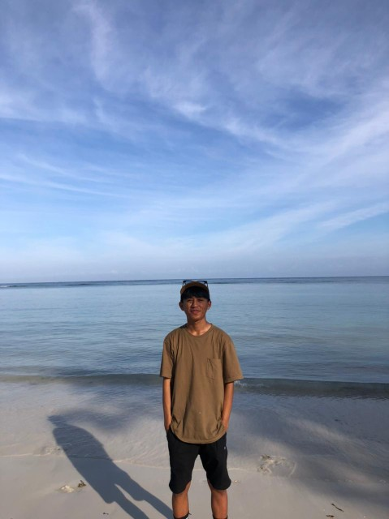
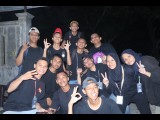

Tentang Saya
Halo, nama saya Hajir. Saya adalah mahasiswa semester 3 di Program Studi Teknik Informatika, Universitas Tadulako. Saya memiliki minat yang besar dalam dunia pemrograman dan sangat antusias untuk terus mengembangkan kemampuan saya di bidang ini. Selain belajar, saya juga memiliki beberapa hobi yang saya nikmati di waktu luang, seperti bermain futsal bersama teman-teman untuk menjaga kebugaran dan menikmati momen kebersamaan. Saya juga suka jalan-jalan untuk mengeksplorasi tempat-tempat baru, karena menurut saya, pengalaman berpergian bisa memberikan inspirasi dan perspektif yang berbeda dalam kehidupan.
Portofolio

